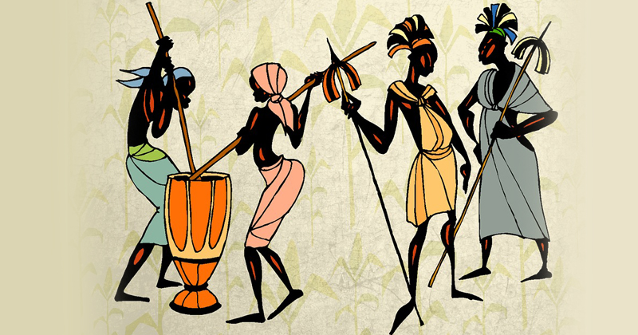

Olhar crítico
Histórias complexas pedem cuidado
Expressões como “atraso no desenvolvimento” podem simplificar uma história complexa. Ao encontrar esse tipo de explicação, questione quais fatores históricos são apresentados e lembre-se de que não existe uma resposta única para as realidades de um continente tão diverso.
